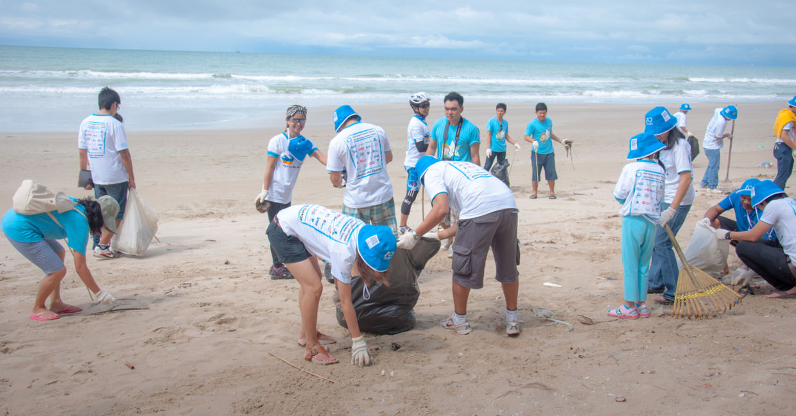
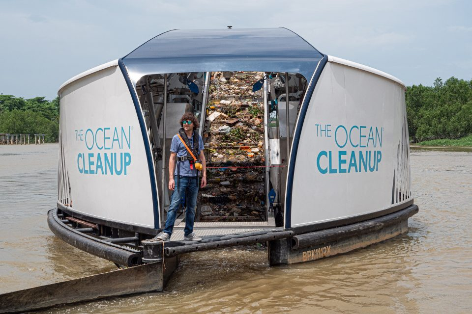

Cleanup Efforts
The Ocean Cleanup is working on new technologies that will catch pollution both in oceans and in waterways that lead to oceans. According to Jenna Jambeck, a distinguished professor of environmental engineering at the University of Georgia College of Engineering, in her April 2018 article, “Marine Plastics” published on the website ocean.si.edu, “The Ocean Cleanup, plans to use open-ocean booms to gather plastic on the surface of the water and then put the collected trash into ships for proper disposal. It’s an ambitious idea that has received a lot of press and financial support…” Jambeck also says, “Changes can be made by governments, corporations and individuals to reduce the negative impacts of plastic on our health, and the health of the planet.” It is up to people, like us, to make the changes needed to fix this problem before it gets worse.

